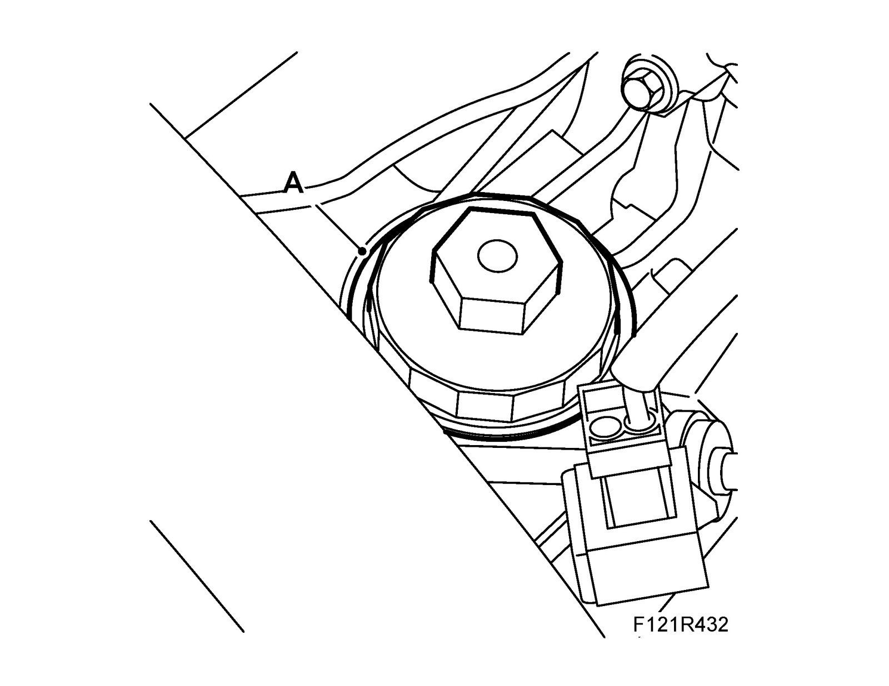
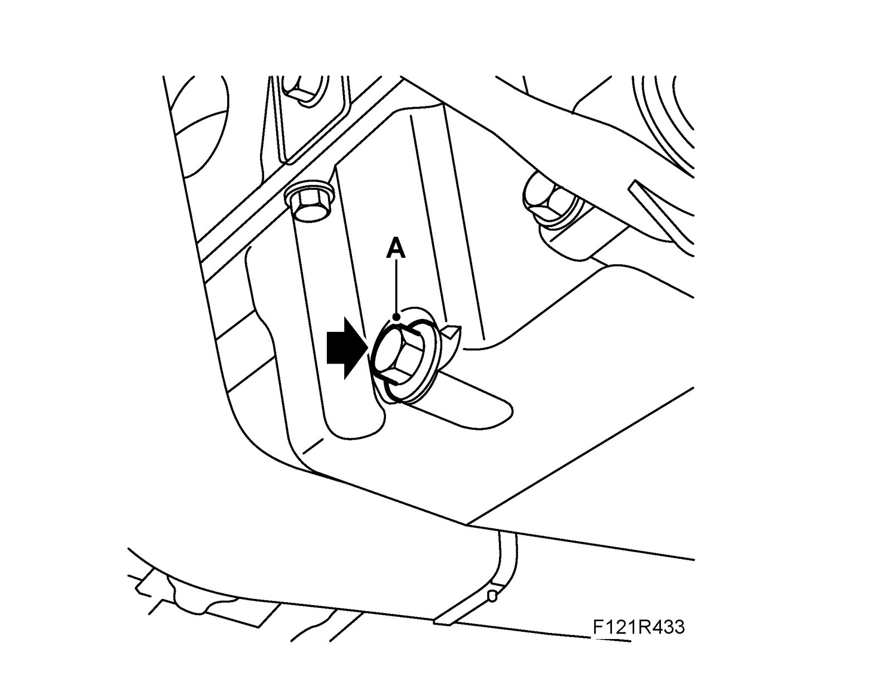
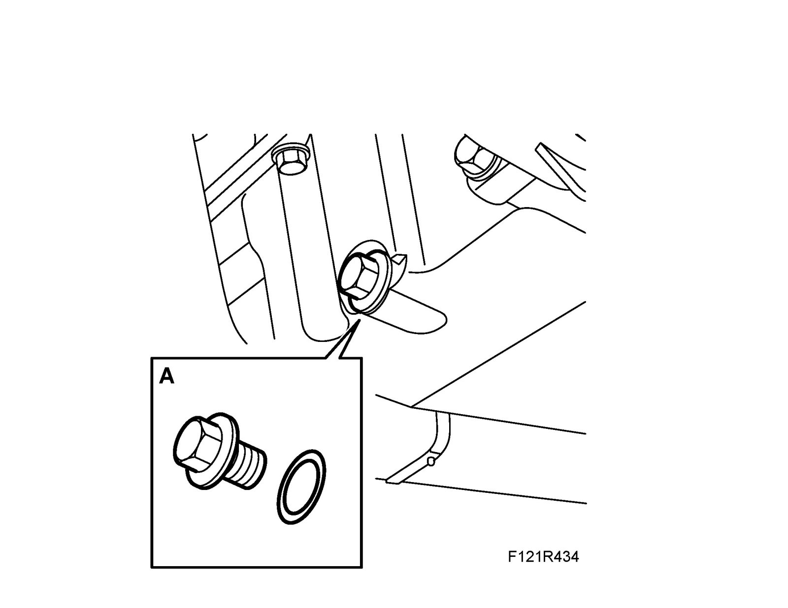
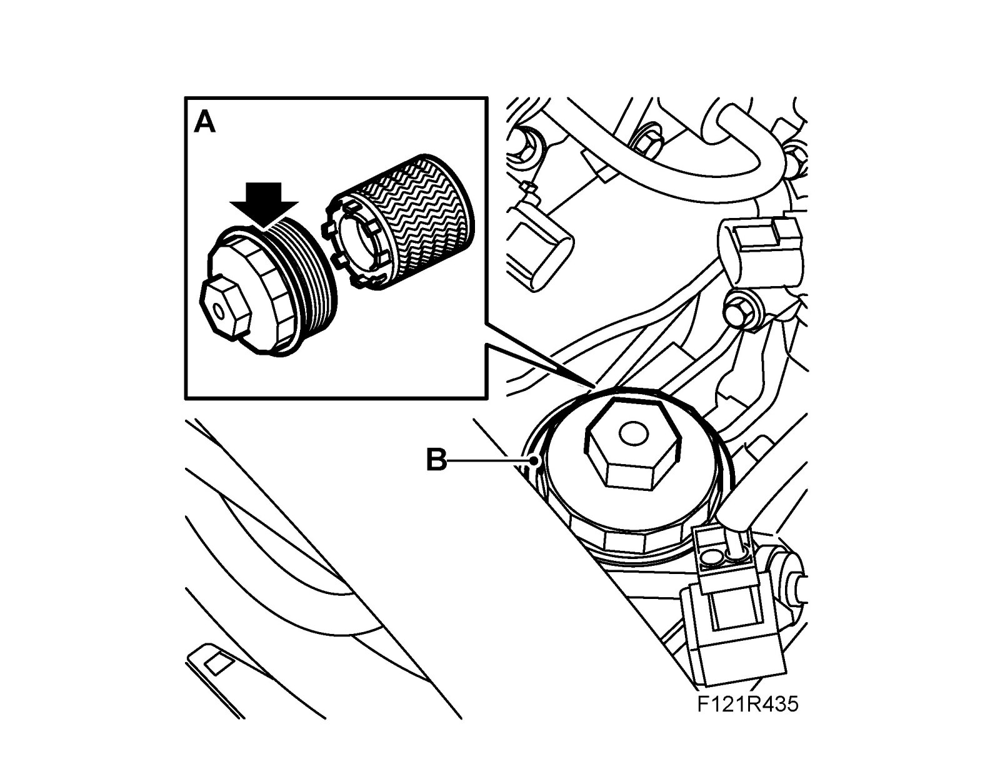

Oil Filter: Service and Repair
Changing engine oil and oil filter1. Remove the upper engine cover.
2. Undo the oil filter cover (A) using 83 96 129 Oil filter tool

3. Raise the car and place a receptacle underneath.
4. Remove the drain plug (A) and drain the engine oil.

5. Fit the oil plug with a new O-ring (A).
Tightening torque 25 Nm (18 lbf ft)

6. Lower the car, remove the cover and the filter element as well as the O-ring from the cover. Collect any spilled oil with a rag.
7. Fit a new filter element (A) and O-ring to the cover (B), lubricate the O-ring with engine oil.

8. Fit the filter cover.
Tightening torque 25 Nm (18 lbf ft)
9. Fill with engine oil, see Recommended oil quality.
10. Connect an exhaust hose, start the engine and let it run for 30 seconds before turning it off.
11. Check the oil level after 3-5 minutes. Top up with oil as necessary.
12. Fit the upper engine cover.